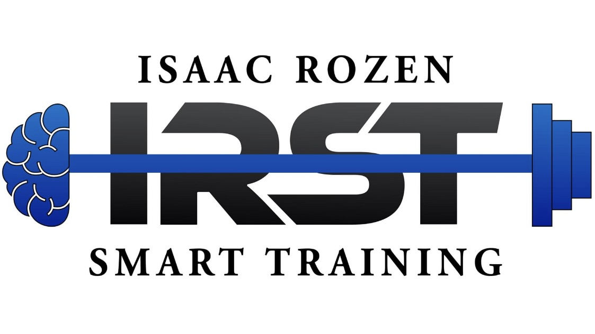

פיתוח ספורטאים על בסיס מדידה, נתונים ומחקר
יצחק רוזן, מאמן יכולות גופניות לספורטאים. עבודה שיטתית ומבוססת על מבדקים אובייקטיביים.
אודות
קצת עליי

הספורט תמיד היה חלק מרכזי בחיים שלי. ההתחלה שלי הייתה דווקא באומנויות הלחימה — עשר שנים של עשייה תחרותית, שלימדו אותי משמעת וסבלנות לתהליך ארוך-טווח, עוד לפני שהבנתי כמה זה יעזור לי בהמשך.
בצבא הייתי מדריך אימון גופני, וזה היה הרגע שבו הבנתי שהתחום הזה — לעזור לאנשים להיות טובים יותר בגוף שלהם — הוא מה שאני רוצה לעשות. משם המשכתי ללימודי חינוך גופני ולתעודת הדרכה במכללה לחינוך גופני ולספורט ע"ש זינמן במכון וינגייט.
שנים אחר כך שיחקתי רוגבי שביעיות, והגעתי לסגל הרחב של נבחרת ישראל. שם הבנתי עוד יותר את החשיבות של עבודה ויכולות גופניות להצלחה ולהנאה מהספורט. במקביל התחלתי לעבוד במעבדות למדעי הספורט — קודם במעבדה לביומכניקה במכון וינגייט, ואחר כך באוניברסיטת תל אביב. שם, בין המעבדה למגרש, נולדה ההבנה שמלווה אותי עד היום: הביצועים הכי טובים לא נבנים רק על ניסיון, וגם לא רק על מדידה — הם נבנים כשמשלבים בין השניים.
היום אני מלווה ספורטאי כדורסל, כדורגל, כדורעף וכדוריד — מגיל ההתבגרות ועד לרמה הבוגרת. אני עובד איתם בחדר הכושר, על המגרש, ובמבדקים שמראים בדיוק איפה הם עומדים — לא מרגישים, אלא יודעים.
הגישה שלי
Smart Training
לא סתם אימון כושר. כל תוכנית בנויה סביב עקרונות אימון ופיתוח יכולות גופניות ארוכי טווח, עם התאמה לשלב ההתפתחותי של הספורטאי — לא רק לגיל שלו על הנייר.
חדר כושר
פיתוח ארוך-טווח של מרכיבי הכוח, בהתאם לגיל, רמה ורקע, עם התאמה של משתני האימון.
מגרש
עבודת רגליים ותנועה ספציפית לענף, כדי לייצר המרה מיטבית של היכולות שבנינו בחדר כושר למצבי משחק אמיתיים.
מדידה
תכנון ארוך-טווח שמתחשב בשלב ההתפתחות הביולוגי והקוגניטיבי, לא רק הכרונולוגי — עם מבדקים תקופתיים שמראים שיפור אמיתי.
ניסיון מקצועי
איפה עבדתי
תוצאות
מה שנמדד, אפשר לשפר
שיפור אישי במהלך עונה, אצל שלושה ספורטאים מהקבוצה, בשלושה מבדקי כוח וקפיצה.
| CMJ | SJ | Broad Jump | |
|---|---|---|---|
| ת.כ | +18% | +22% | +2% |
| צ.ח | +20% | +12% | +8% |
| ר.ב | +14% | +16% | +3% |
שירותים
איך אפשר לעבוד יחד
אימונים אישיים
תוכנית עבודה אישית, בנויה סביב היכולות והמטרות הספציפיות של הספורטאי.
אימונים קבוצתיים
עבודה עם קבוצות וחברות — אקדמיה, מחלקת נוער, או קבוצת עבודה עצמאית.
מבדקים גופניים
מבדקי כוח, קפיצה ואיזוקינטיקה — לספורטאי בודד או לקבוצה שלמה.
ליווי מרחוק
בניית תוכנית ומעקב מרחוק, עבור ספורטאים שלא נמצאים באזור באופן קבוע.
פעילות באזור השרון — מיקום מדויק ייקבע בתיאום אישי.
יצירת קשר
מוכנים להתחיל?
השאירו פרטים ואחזור אליכם, או פנו ישירות ברשתות החברתיות.
תודה! הפרטים נשלחו בהצלחה, ואחזור אליכם בהקדם.